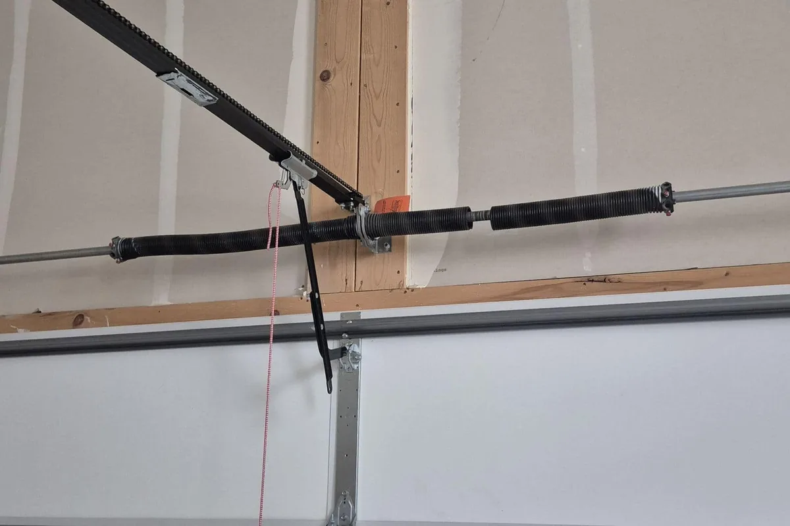
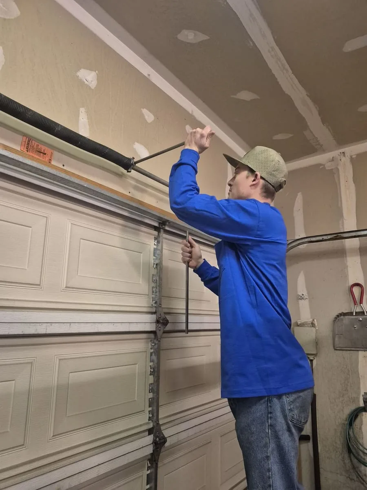

Garage Door Spring Repair
If you heard a loud bang in the garage and now the door won't go up, it's probably a spring. Leave it closed and call us. We replace broken springs all over the Salt Lake Valley.
How to tell a spring is broken
A loud bang
Springs are wound tight. When one lets go, people usually say it sounded like a gunshot in the garage.
The door feels way too heavy
If you pull the emergency release cord and cannot easily lift the door with one hand, your spring is no longer carrying the weight.
The opener strains
The opener runs and hums, but the door only comes up a few inches, then stops or reverses.
A gap in the coil
Look at the big spring above the door. If there's a 1 to 2 inch gap in the coil, it's broken.
Please don't fix this one yourself
These springs hold a lot of tension. Without the right winding bars and training, people get hurt doing this. Keep the door closed and give us a call.
Torsion and extension springs
Most doors here use one of two spring setups. We work on both, and we usually have the parts with us.
Torsion Springs
Mounted on a metal shaft directly above the garage door. This is what most homes have, and it's the safer of the two setups. The ones we install are rated for 15,000 to 25,000 cycles. If you have two, we'll suggest replacing both so the door stays balanced.
Extension Springs
Long springs that run parallel to the ceiling tracks on either side of the door. If one snaps and there's no safety cable through it, it can fly across the garage. We can replace them, add cables, or switch you over to torsion.

Spring repair warranty
Springs we install are covered for 3 years, parts and labor. The warranty covers the original homeowner on residential doors only. It does not cover damage, misuse, or work by others.
Spring repair questions and pricing
Straight answers to what people in West Jordan and around the valley ask us most.
How much does spring replacement cost?
Most spring replacements run $250 to $499. A single spring is usually about $299, and a double is $420 to $499. Big, heavy doors like all glass ones cost a bit more. Call and I'll give you a price over the phone.
Should I replace both springs if only one broke?
Yes. Two springs on a door have done the same number of cycles, so when one goes, the other is usually close behind. Doing both at once saves you a second trip charge and keeps the door balanced.
How long do new springs last?
The springs we put in are rated for 15,000 to 25,000 cycles. One cycle is the door going up and back down. How many years that adds up to depends on how much you use the door.
Can I just open the door with my opener?
No. The springs do the lifting. The opener just guides the door. If you make the opener lift a door with a broken spring, you can strip the gears or burn out the motor, and then you're paying for an opener too.
Is there a warranty on spring repair?
Yes. Springs we install are covered for 3 years, parts and labor. The warranty covers the original homeowner on residential doors only. It does not cover damage, misuse, or work by others.
Where we fix springs
We're based in West Jordan, so Daybreak and the south valley are close. We also go down into Utah County. I keep some springs on the truck. A lot of the time I weigh the door first so the new springs match it exactly, then go grab the right ones. It doesn't take long, and your door ends up balanced right.
Need your spring fixed fast?
Car stuck in the garage? Call us. We fix a lot of broken springs around the valley, with springs matched to the weight of your door.
(801) 641-6850Serving West Jordan, Sandy, Draper & More